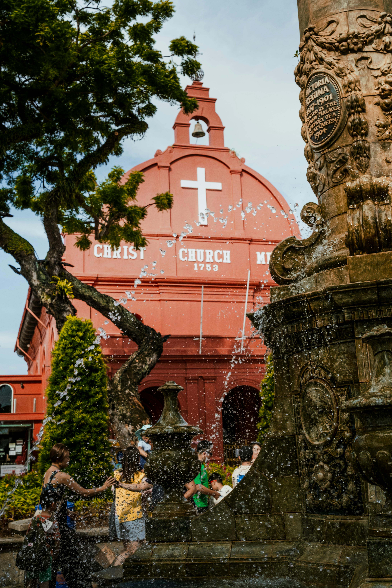

The Stadthuys
Melaka's Red Beacon of History
Location: Pulse of Melaka
Located in the pulsing heart of Melaka, the Stadthuys stands as a majestic red beacon of history and culture. This well-preserved Dutch colonial building, dating back to 1650, is not only an architectural marvel but also Malacca's premier museum, housing a wealth of historical treasures. Situated at Laksamana Road, in the famous area known as the Red Square (Dutch Square), the building is directly beside Christ Church Melaka, forming part of the iconic red architectural cluster that defines this historic district.
Interactive map showing The Stadthuys location at Laksamana Road, Red Square area, Melaka
Historical Significance
1650: Dutch Influence
Erected by the Dutch as the office of the Dutch Governor and Deputy Governor, it's considered the oldest surviving Dutch building in the Orient. The name "Stadthuys" is an old Dutch spelling meaning "city hall," reflecting its original administrative function. This building served as the political and administrative heart of Dutch Malacca for over 150 years.
Today: A Living Museum
Now home to the History and Ethnography Museum & Cheng Ho Gallery, the Stadthuys offers visitors a rich journey through Malacca's multifaceted past. The museum houses extensive collections that chronicle Melaka's evolution from a strategic trading port to a modern Malaysian state, including traditional costumes, art, and artifacts from various periods and communities.
Key Features
Architectural Heritage
Well-preserved Dutch colonial architecture with distinctive red façade, representing the oldest surviving example of its kind in Asia.
History and Ethnography Museum
Extensive displays covering Melaka's history, ethnography, and cultural development, including traditional costumes, art, and artifacts from various periods and communities.
Cheng Ho Gallery
Dedicated gallery space showcasing the legacy of Admiral Cheng Ho (Zheng He) and his historic voyages to Melaka, highlighting the Chinese-Malay cultural connections.
Historical Significance
Served as the administrative center of Dutch Malacca, witnessing centuries of political, social, and economic transformations.
UNESCO Recognition
Located within Melaka's UNESCO World Heritage Site, contributing to global recognition of the city's historical value.
Educational Value
Offers immersive learning experiences about colonial history, multicultural heritage, and architectural preservation.
Tourist Attraction
Central location in Melaka's tourism circuit, easily accessible and integrated with other historical landmarks.